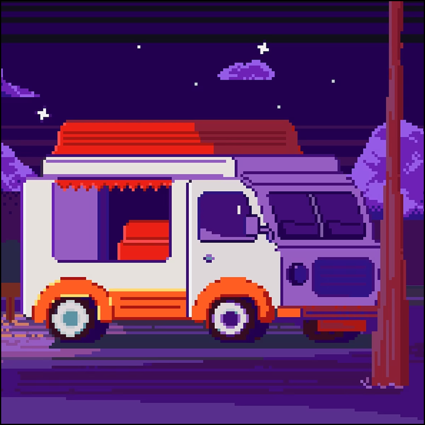
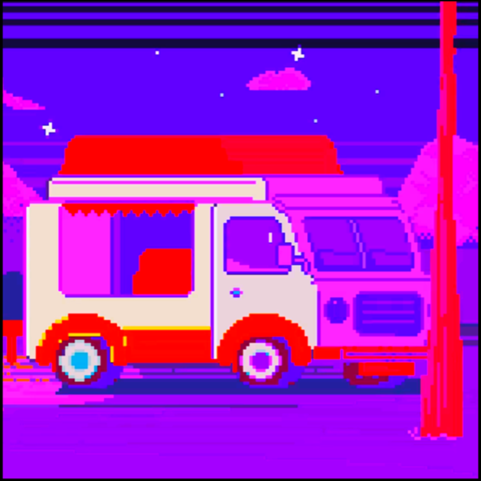
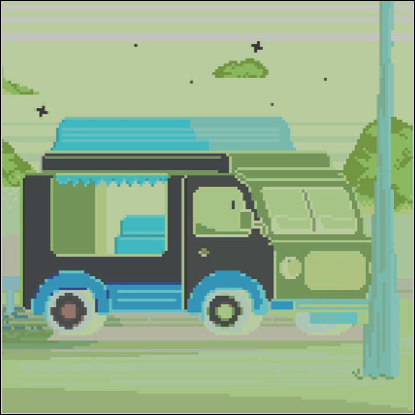
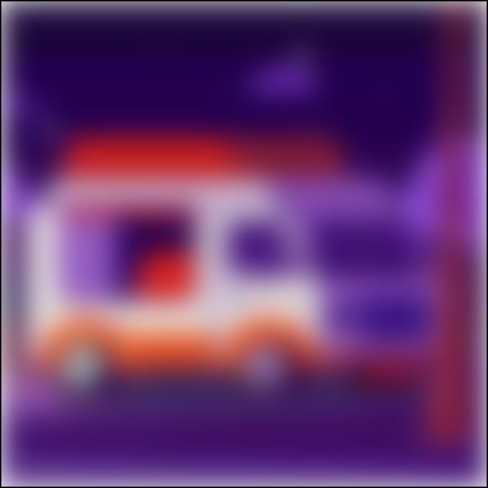
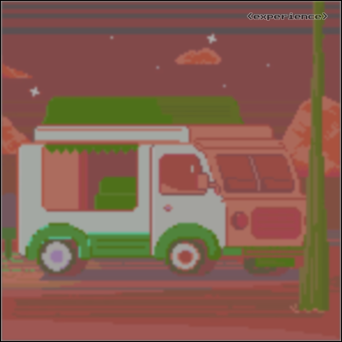

Фритрек по теме
mood

Место, чтобы остановиться, подумать и написать, что вы чувствуете в этой точке пути.
Сейчас вы уже очень много знаете о вёрстке. Но это только начало.
</HTML>

Место, чтобы остановиться, подумать и написать, что вы чувствуете в этой точке пути.
Сейчас вы уже очень много знаете о вёрстке. Но это только начало.

Иногда полезно сделать паузу и посмотреть на прогресс чуть со стороны.
В процессе учёбы меняется не только проект — меняется взгляд на детали.

Хочется, чтобы интерфейс реагировал на внимание — без лишнего шума.
Маленькие микроанимации создают ощущение живого объекта.

Важно помнить о доступности: фокус должен быть заметным, но аккуратным.
И да — всегда проверяю, как это выглядит на клавиатуре.

CSS-фильтры позволяют усилить настроение — главное, не переборщить.
Мне нравится, когда визуальная часть поддерживает смысл текста.

Фон из нескольких градиентов создаёт текстуру, а не просто заливку.
Люблю, когда “пиксельность” аккуратно поддерживает стиль.

Короткие строки легче читаются, длинные — лучше держать ритм.
Поэтому отступы и ширина контента тут — не случайность.

Здесь фильтр составной: несколько эффектов, чтобы почувствовать разницу.
И чтобы точно выполнить требование про “хотя бы один множественный”.